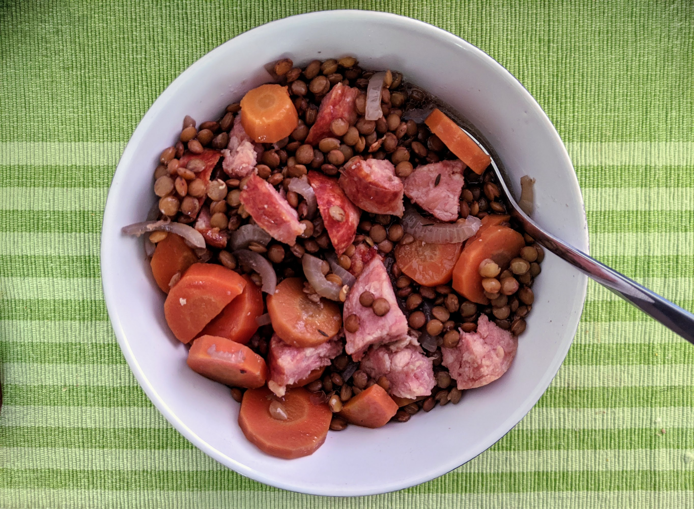

..@..♦.D.

|
Présentation 
|
Blog
|
Recettes
|

Ici avec du saucisson de Fribourg et du saucisson vaudois.
Pour 4 personnes :
Remarque : On peut aussi mettre les saucisses au début, si on utilise une mijoteuse pendant la journée et qu'on a envie que tout soit prêt quand on revient. Dans ce cas, mieux vaut utiliser de la saucisse fumée : ça va parfumer la soupe, et la viande va être très friable en fin de cuisson.